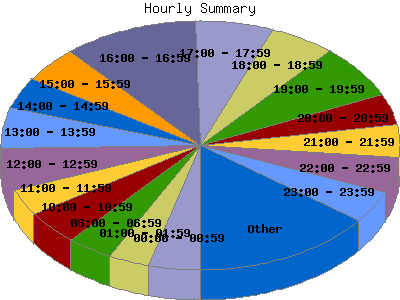

Report generated by Analog 5.91beta1 and Report Magic 2.21
|
Web Server Statistics for "Harish Narayanan (hnarayan) - November 2003" Report generated by Analog 5.91beta1 and Report Magic 2.21 |
The Hourly Summary identifies the level of activity broken down by each hour. Remember that one page hit can result in several server requests as the images for each page are loaded. This summary also compares the level of activity during working hours and after hours as a total for the report time frame.


| Hour | Number of requests | Number of bytes transferred | Percentage of the bytes | Percentage of the requests | |
|---|---|---|---|---|---|
| 1. | 00:00 - 00:59 | 745 | 16.990 MB | 6.22% | 4.18% |
| 2. | 01:00 - 01:59 | 589 | 16.583 MB | 6.07% | 3.31% |
| 3. | 02:00 - 02:59 | 399 | 6.868 MB | 2.51% | 2.24% |
| 4. | 03:00 - 03:59 | 270 | 3.571 MB | 1.31% | 1.52% |
| 5. | 04:00 - 04:59 | 288 | 7.020 MB | 2.57% | 1.62% |
| 6. | 05:00 - 05:59 | 422 | 11.025 MB | 4.04% | 2.37% |
| 7. | 06:00 - 06:59 | 657 | 7.275 MB | 2.66% | 3.69% |
| 8. | 07:00 - 07:59 | 416 | 9.060 MB | 3.32% | 2.34% |
| 9. | 08:00 - 08:59 | 358 | 8.100 MB | 2.96% | 2.01% |
| 10. | 09:00 - 09:59 | 449 | 6.949 MB | 2.54% | 2.52% |
| 11. | 10:00 - 10:59 | 799 | 11.268 MB | 4.12% | 4.49% |
| 12. | 11:00 - 11:59 | 602 | 12.661 MB | 4.63% | 3.38% |
| 13. | 12:00 - 12:59 | 974 | 12.665 MB | 4.64% | 5.47% |
| 14. | 13:00 - 13:59 | 952 | 23.292 MB | 8.53% | 5.35% |
| 15. | 14:00 - 14:59 | 719 | 11.241 MB | 4.12% | 4.04% |
| 16. | 15:00 - 15:59 | 836 | 14.305 MB | 5.24% | 4.70% |
| 17. | 16:00 - 16:59 | 1,960 | 23.389 MB | 8.56% | 11.01% |
| 18. | 17:00 - 17:59 | 1,139 | 7.869 MB | 2.88% | 6.40% |
| 19. | 18:00 - 18:59 | 941 | 14.981 MB | 5.48% | 5.29% |
| 20. | 19:00 - 19:59 | 1,262 | 9.886 MB | 3.62% | 7.09% |
| 21. | 20:00 - 20:59 | 706 | 6.457 MB | 2.36% | 3.97% |
| 22. | 21:00 - 21:59 | 759 | 10.884 MB | 3.98% | 4.26% |
| 23. | 22:00 - 22:59 | 810 | 10.151 MB | 3.72% | 4.55% |
| 24. | 23:00 - 23:59 | 751 | 10.676 MB | 3.91% | 4.22% |
| Work Hours (8:00am-4:59pm) | 7,649 | 123.870 MB | 45.35% | 42.96% | |
| After Hours (5:00pm-7:59am) | 10,154 | 149.298 MB | 54.65% | 57.04% | |
This report was generated on January 18, 2004 18:29.
Report time frame November 1, 2003 00:43 to November 30, 2003 23:58.
| Web statistics report produced by: | |
 Analog 5.91beta1 Analog 5.91beta1 |  Report Magic 2.21 Report Magic 2.21 |